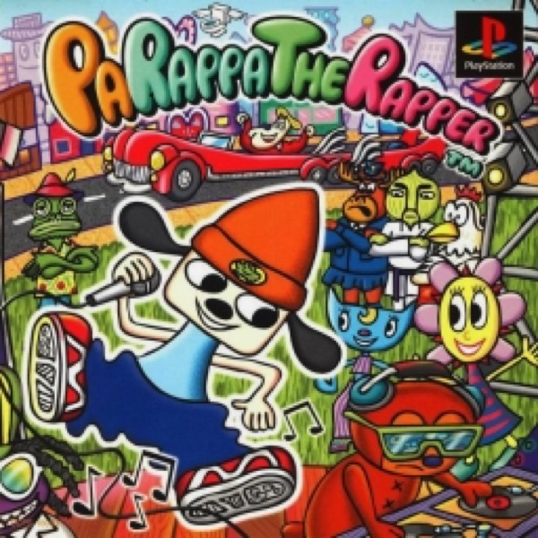

Simulation · 1997
PaRappa the Rapper
Button timing as comedy; the rhythm genre finds its feet and its attitude.

Cover: Wikipedia: PaRappa the Rapper
Facts
- Released
- 1996-12-06
- Genre
- Rhythm
- Category
- Simulation
- Platforms
- PlayStation
- Developers
- NanaOn-Sha
- Publishers
- Sony Interactive Entertainment